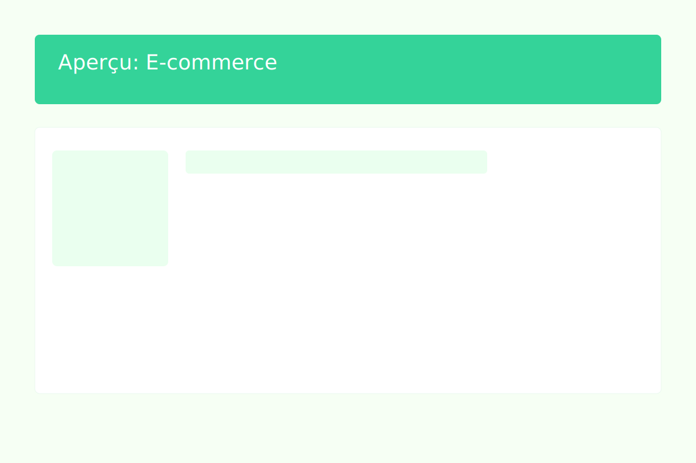

CRÉATION SITE DE VENTE
E-Commerce

Description
Développement d'une plateforme de vente en ligne complète. Ce projet professionnel m'a permis de mettre en œuvre les principes du développement web moderne et de l'e-commerce.
Technologies utilisées
- HTML / CSS / JavaScript
- Système de gestion de contenu (CMS)
- Base de données SQL
- Intégration paiement en ligne
Objectifs atteints
- Créer une interface e-commerce intuitive et sécurisée
- Implémenter un système de panier et de commande
- Assurer la compatibilité multi-navigateurs
Compétences développées
- Architecture Web full-stack
- Sécurité des données client
- Gestion de base de données transactionnelle
- Expérience utilisateur e-commerce